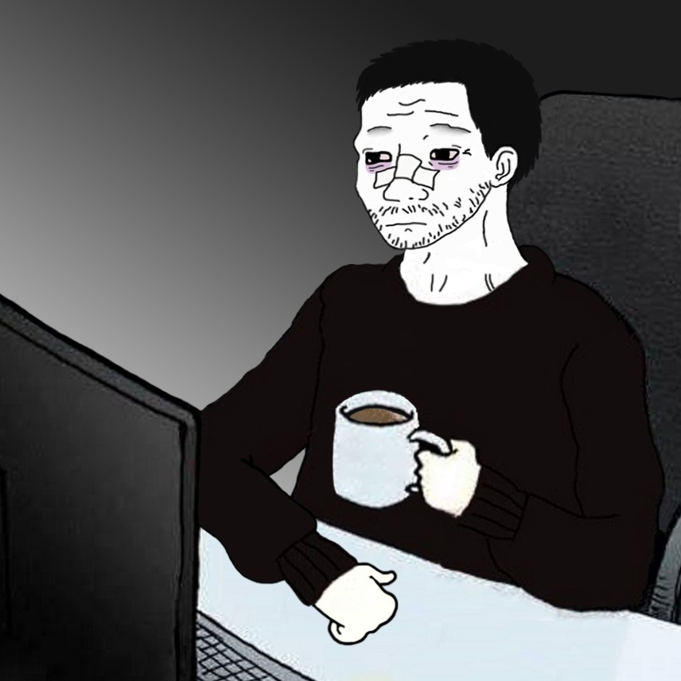

DOOMERS LEGENDARY BLACK COFFEE
what is so special about doomer's coffee?
it's as powerfull as it can be.

look at this doomer, casually workin and sippin his magnificent coffee
SO, how to make this coffee?
it is as easy as it can be indeed.
just follow the rules
- grab the most depressing mug you have
- put 4-6 table spoons of coffee into the mug(dont hesitate with amount per tablespoon), leave the spoon in the mug
- heat up the water in kettle
- when water starts boiling, pour it into the mug
- leave your coffee for at least 5 minutes
now it's ready to drink so pour it in yourslef!
wanna see other doomer recipes?
click here